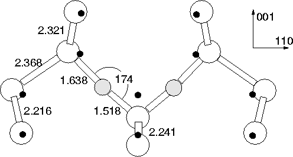

However, there is an additional mode seen at 1105 cm-1 in the
presence of the dimer modes [151], and it was
speculated that this may be two Oi atoms seperated by a single
Si-Si bond along  110
110 . An alternative explanation is that this
is due to the symmetric dimer. Although the calculated symmetric
dimer does not have a mode exactly at this value, there is some
evidence in favour of this model for the 1105 cm-1 mode. The
defect appears to have an experimental binding energy of 0.2 eV as
compared to 0.3 eV for the dimer [151], so an energy
difference of 0.1 eV between the two structures is quite close to our
calculated value of 0.26 eV. The mode is only observed at 10K, and
disappears by 300K. This would be consistent with symmetric dimers
getting `frozen in' at lower temperatures with a finite reorientation
barrier. At 300K they are able to overcome this and no symmetric
dimers are observed. In addition the 1105 cm-1 mode drops by
50/52 cm-1 when 16O is switched to 18O, very close to
our calculated value of 52.6 cm-1. To fully check this model it
would be necessary to calculate the energy barrier between the
symmetric and assymmetric structures, as well as locate further
experimental modes to improve the assignment.
. An alternative explanation is that this
is due to the symmetric dimer. Although the calculated symmetric
dimer does not have a mode exactly at this value, there is some
evidence in favour of this model for the 1105 cm-1 mode. The
defect appears to have an experimental binding energy of 0.2 eV as
compared to 0.3 eV for the dimer [151], so an energy
difference of 0.1 eV between the two structures is quite close to our
calculated value of 0.26 eV. The mode is only observed at 10K, and
disappears by 300K. This would be consistent with symmetric dimers
getting `frozen in' at lower temperatures with a finite reorientation
barrier. At 300K they are able to overcome this and no symmetric
dimers are observed. In addition the 1105 cm-1 mode drops by
50/52 cm-1 when 16O is switched to 18O, very close to
our calculated value of 52.6 cm-1. To fully check this model it
would be necessary to calculate the energy barrier between the
symmetric and assymmetric structures, as well as locate further
experimental modes to improve the assignment.
|  |